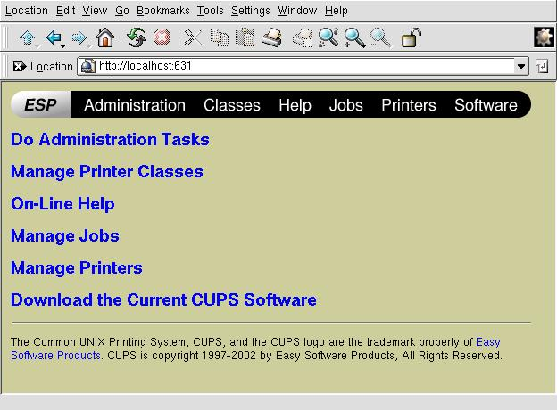
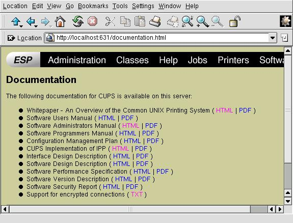

Служба печати CUPS
Автор:
Alan
Ward
Перевод: Юрий Султанов
Служба печати CUPS (Common Unix Printing System) предназначена для унификации
доступа ко всем принтерам, находящимся в локальной сети. Возможно, будь Linux
единственной ОС в мире, всем хватало бы возможностей стандартной Berkeley LPD и
такая система не понадобилась, но в реальных условиях именно CUPS может
обеспечить доступ к Windows и SMB-принтерам, обладая при этом возможностью
периодически обновлять информацию о принтерах и объединять их в группы (в
зависимости от типа или других параметров).
Компания Easy Software Products, разработавшая CUPS, распространяет ее под
лицензией GPL, предоставляя на платной основе поддержку и дополнительные функции
.
Программу можно скачать с сайта http://gazette.linux.ru.net/www.cups.org,
либо получить в виде RPM в большинстве дистрибутивов Linux (есть в Mandrake,
RedHat и SuSE). (ALT Linux, ASP Linux, Debian, Slackware и т.д. и т.п. Любой
современный дистрибутив содержит в своём составе пакеты CUPS.
Прим.ред.)
Как это работает?
По идее, CUPS становится полной заменой системы печати LPD, подставляя на
место команды lpr и драйверов LPD свои аналоги. Программы Linux (и Unix) не
замечают этой подмены, так как обе системы основаны на базе языка описания
страниц Postscript.
В CUPS включена поддержка большинства принтеров, подключаемых через LPT, USB
и даже COM-порты. Конечно, подключение через COM-порт - это не лучший вариант,
но если у вас еще остались старые матричные принтеры, подключаемые через этот
интерфейс, то CUPS позволит Вам собрать из кучи такого железа неплохой
принт-сервер. Может быть, это как раз то, что нужно Вашей школе?
Обновление информации о принтерах
Служба CUPS обладает возможностью, привычной скорее для мира Windows, чем для
Linux: она извещает все компьютеры в локальной сети о принтерах, доступных для
печати и их состоянии.
Естественно (в отличие от Windows :), эта ее способность поддается настройке.
Внося изменения в файл конфигурации CUPS (cupsd.conf), можно определить какие
компьютеры (точнее, в каких подсетях) будут получать такие извещения и как
часто, что позволяет сократить неизбежный в таком случае широковещательный
трафик.
Классификация принтеров
Группа принтеров или класс (в терминологии CUPS) -- это
несколько принтеров, которые пользовательские приложения воспринимают как один.
К примеру, можно создать класс ЦВЕТНЫЕ ПРИНТЕРЫ, объединяющие все цветные
принтеры. Пользователь может настроить свою программу так чтобы печатать на
принтер ЦВЕТНЫЕ ПРИНТЕРЫ, и получить распечатку на любом из этих принтеров. На
каком именно - будет зависеть от прав этого пользователя, либо от того, какой из
принтеров будет доступен в это время
В то же время, даже если какой-либо принтер является членом группы, это не
мешает пользователю печатать именно на этот принтер. А вот уже с помощью списков
доступа CUPS можно добиться того, что конкретный принтер будет отвергать такие
попытки, а группа принтеров, в которые он входит - напечатает задание. В
результате пользователи смогут печатать на группы принтеров, а не на один
принтер - все зависит от Вас!
Пример 1
В моей лаборатории есть 5 ПК, на каждом из которых установлен Linux и
работает CUPS. Если мне нужно заменить принтер на одном из них, то с помощью
web-интерфейса CUPS я :
- отключаю старый принтер,
- подключаю новый принтер,
- и все это за 30 секунд. Еще через 30 секунд все остальные ПК получают
обновленную информацию об используемом принтере. Глядишь, как раз за эту минуту
мой лазерный принтер и прогреется.
Пример 2
Я хочу разделить все принтеры моей школьной сети на три класса:
- Класс "Лазерный Ч/Б печать" - на нем могут печатать все.
- Класс "Цветной черновая печать" - на нем могут печатать все, но с
ограничением количества.
- Класс "Цветной качественная печать" - на нем можно печатать только по
моему разрешению.
Большинство имеющихся принтеров непосредственно доступны с других
Windows-компьютеров, смысл же установки CUPS на Linux-шлюзе и подключения
принтеров к нему состоит в следующем:
- пользователи смогут найти все принтеры в одном месте;
- пользователи смогут печатать на принтеры, находящиеся в других подсетях и
соединенных этим шлюзом, при этом не создавая неизбежного
ранее (для Windows) широковещательного трафика , значительно снижающего
производительность сети;
- я буду уверен в том, что если преподаватель, находящийся на 4-ом этаже,
пошлет задание на принтер, находящийся на первом, а там внезапно закончится
бумага, то его задание будет перенаправлено и распечатано на бездействующем в
это время принтере.
Интеграция с Windows
Если вы, работая за Linux-компьютером, хотите напечатать на Windows-принтере
(либо наоборот), вам понадобится работающий сервер Samba. Установите его и
проверьте, как он работает (например, попробуйте под обычным пользователем
просмотреть свой домашний каталог на Linux-машине с компьютера Windows). Если у
вас установлена Windows 98 или более поздняя её версия, то не забудьте указать в
файле /etc/samba/smb.conf параметр "encrypt password = yes".
CUPS может использовать принтеры, к которым на Windows-компьютере открыт
общий доступ, а также сетевые принтеры, использующие протокол SMB - в ее
терминах они называются "Windows printer using Samba". Все, что нужно - просто
указать адрес принтера в формате: smb://server/printer.
Благодаря серверу Samba Windows-компьютеры также могут использовать принтеры
CUPS. Настраивайте сервер Samba как обычно - то есть не делайте ничего. Обычно
доступ к принтерам открыт по умолчанию, если же это не так, добавьте в файл
smb.conf соответствующую информацию. Так как Samba воспринимает принтер
CUPS так же, как LPD-принтер, то при этом можно использовать любые стандартные
опции (От переводчика - imho в последних версиях Samba можно явно указывать
наличие CUPS. Подробнее об этом - на сайтах http://gazette.linux.ru.net/www.samba.org,
http://gazette.linux.ru.net/www.cups.org
и http://gazette.linux.ru.net/www.linuxprinting.org).
Сетевые принтеры
Сетевой принтер (то есть принтер, оснащенный сетевой картой и непосредственно
подключенный к локальной сети) может использовать любой из множества
существующих протоколов:
- Протокол SMB - такой принтер можно увидеть в "Сетевом окружении" Windows.
- Протокол LPD - несколько моделей принтеров Epson имеют встроенную
поддержку TCP/IP и LPD и к ним можно подключиться через 515 порт, как к любому
Linux-компьютеру. Для такого принтера в настройках CUPS попробуйте указать
queue lp
- Фирменный протокол (плохо дело..).
В первом и втором случае действуйте так, как будто сетевой принтер - это
обычный принтер, подключаемый к компьютеру. В третьем случае - как говорится,
приплыли (скорее всего:). Лично со мной такое случилось, когда я пытался
достучаться до сетевого принтера Lexmark - в итоге мне пришлось подключить его к
Windows-компьютеру и сделать его доступным в сети уже оттуда.
Настройка
Настраивать CUPS можно двумя способами. Можно непосредственно редактировать
файл конфигурации /etc/cups/cupsd.conf, а можно набрать в браузере
http://localhost:631 и воспользоваться интуитивно понятным веб-интерфейсом,
очень похожим на веб-интерфейсы многих сетевых принтеров:

По умолчанию доступ к веб-интерфейсу разрешен только с того компьютера, где
работает CUPS (локального интерфейса). Если вас это не устраивает, измените
следующие строки в файле конфигурации cupsd.conf, и перезапустите
CUPS:
<Location /> # определяется политика доступа к
Order Deny, Allow # главному меню веб-интерфейса
Deny From All
Allow From 127.0.0.1 # разрешить доступ с локального интерфейса
Allow From 192.168.1.* # разрешить доступ с любого компьютера
# в подсети 192.168.1.0/24
Allow From mybox.mydomain # и еще с моего компьютера в другой подсети
</Location>
Также можно установить политику доступа к каждому пункту меню
(Location в терминах CUPS) с любого IP-адреса, либо подсети. Это
означает, что какие-то компьютеры смогут получить доступ лишь к самому серверу,
но не смогут получить доступ ко всему меню конфигурации, либо каким-то отдельным
его пунктам.
Если Linux-компьютер выполняет одновременно две роли: принт-сервера и моста
между двумя или большим количеством IP-сетей, можно также указать, на каких
интерфейсах CUPS будет принимать запросы:
Listen 127.0.0.1:631 # Не удаляйте эту строку !
Listen servename:631 # Здесь можно указать имя вашего сервера
Listen 192.168.1.1:631 # Либо его IP-адрес
Это означает, что веб-интерфейс будет доступен только через интерфейс eth0
(его IP-адрес 192.168.1.1), и недоступен на интерфейсе eth1 (его IP-адрес
172.16.0.1).
По умолчанию при доступе к веб-интерфейсу используется обычная схема
авторизации (имя пользователя/пароль), но можно использовать и SSL, что довольно
просто настраивается, опять же путем редактирования cupsd.conf.

Кроме этого через веб-интерфейс можно получить доступ к документации,
описывающей возможности CUPS и способы ее настройки.
PS. Всем, кто хотел бы перевести эту статью: с нею можно обращаться так же,
как с программой под лицензией GPL - т.е. вы свободно можете (я только за!)
копировать ее, публиковать и переводить - только, ПОЖАЛУЙСТА, известите меня об
этом! Очень хотелось бы иметь список переводов - надеюсь, что это поможет мне на
сессии :-)
Алан преподаёт Computer Science в средней школе и университете в Андорре.
Из увлечений и хобби можно выделить научную фотографию (в том числе и цифровую),
путешествия, коллекционирование процессоров и прочих камней. :)
Copyright (c) 2003, Alan Ward. Copying license http://gazette.linux.ru.net/copying.html
Published
in Issue 90 of Linux Gazette, May 2003